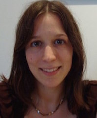

People
Principal Investigator
Victoria Savalei, Ph.D
At present I am continuing work on the new estimation method for incomplete data, called the two-stage (TS) method. I have recently shown that the TS method performs as well as or better than other approaches when data are incomplete (Savalei & Bentler, 2009) and incomplete as well as nonnormal (Savalei & Falk, 2014). I am now extending the TS method to the common situation when data are missing at the item level but the analysis is at the level of the sum scores (e.g., as would be the case when the model is a regression or a path analysis model with sum scores, or an SEM model with parcels), and the results are very promising. This work is funded by NSERC.
Additionally, extending my earlier work on the RMSEA (Savalei, 2012), I am currently investigating some properties of the CFI fit index, popular in SEM.
Finally, I have also developed a new research interest in the area of statistical cognition (how people reason about and use statistics), particularly as it pertains to the crisis of replicability in psychology. I am beginning a research project investigating how researchers use Bayes Factors.
Graduate Students
Cathy (Xijuan) Zhang
I am a Ph.D. student working with Dr. Victoria Savalei. My main area of research is on the personality scale format and response biases in personality data. Two of my current projects examine the negative impact of reverse-worded items on factor structures of psychological scales and explore an alternative scale format called the Expanded format that may minimize the contamination associated with reverse-worded items. I am also working on a project examining how well bootstrap techniques work for fit indices used in structure equation modelling.
Jordan Brace
I am a Ph.D. student in the Quantitative Methods area, working under the supervision of Dr. Victoria Savalei. My research currently focuses on how we evaluate psychometric instruments for measurement invariance when data are not normally distributed. My Master's project focuses on evaluating proposed robust corrections to the chi-square difference test. In the future I plan to examine the efficacy of fit-index based tests of small change in fit to evaluate measurement invariance. I am also working with David Sears at UCLA on a project evaluating the efficacy of explicit feeling thermometers as measures of racial prejudice. Finally, I am also working with Yves Rosseel at Ghent University developing lavaan, an R package for structural equation modelling.
Bill Chen
Bill is a new MA candidate in quantitative psychology, working with Dr. Victoria Savalei. His primary research interest is structural equation modelling. He has a background in empirical research in cognitive science, and worked as a data programmer and analyst for a media firm. In his spare time, he writes and sings songs on a 12 string acoustic guitar.
Website: View personal website
Contact: bill.lihan@psych.ubc.caAffiliated Lab Members
Grace Truong
Grace Truong is a Ph.D. student in the cognitive science area, under the supervision of Dr. Todd Handy. She is currently investigating the behaviour of approximate fit indices (RMSEA and CFI) under conditions of missing and non-normal data. Grace is also a teaching fellow for various graduate-level statistics classes.
Kim Meier
Kim Meier is a Ph.D. student in the cognitive science area, under the supervision of Dr. Deborah Giaschi. Kim is interested in psychophysical research methods (in particular, how to compare data from populations that violate lots of model assumptions) and neuroimaging methods. In the SEM lab, she is working with Grace Truong to investigate the behaviour of approximate fit indices under conditions of missing and non-normal data. Kim enjoys teaching statistics and is a teaching fellow for various graduate-level statistics classes.
Michael Muthukrishna
Michael is a PhD student primarily working with Joe Henrich, Mark Schaller, and Steve Heine. His research focuses on the psychological and evolutionary processes of cultural transmission and evolution. Understanding these processes requires a combination of mathematical and computational modelling ( social network analysis, evolutionary models, complexity theory, etc.) and experimental psychology. Michael is a Statistical Consultant for the department and is working with Dr. Victoria Savalei and Dr. Carl Falk (a lab alumni) on understanding differences in Fit Propensity - the likelihood of a model fitting random data - of SEMs.
Website: View personal website
Contact: michael@psych.ubc.caOscar Olvera
I am a Ph.D. student in the Measurement, Evaluation and Research Methodology (MERM) program under the supervision of Dr. Bruno D. Zumbo in the Faculty of Education. My area of research is primarily focused on latent variable modelling, particularly Latent Class Analysis, finite mixtures and the design and implementation of efficient computer algorithms for purposes of Monte Carlo simulations. I also do research on multivariate non-Gaussian distributions through the use of Copulas (with applications towards SEM) and Bayesian estimation methods in the social sciences.
Website: View personal website
Contact: oscar.olvera100@yahoo.comUndergraduate Students
Yu Luo
Yu Luo completed my B.Sc. in psychology at UBC. His research interests are in quantitative and cognitive psychology. He is currently working with Cathy on the Expanded Format study and learning different methods of data analysis. He plans to attend graduate school to continue conducting research in the future.
Bernice Liang
Bernice Liang is a recent graduate in Psychology and Statistic at Boston University. Her research interests are in quantitative psychology and stat method application. She is currently working with Cathy on the Expanded Format study. Her plan is to learn more about conducting research and to attend related graduate programs in the future.
Lab Alumni
Carl Falk
Carl is an Assistant Professor of Measurement and Quantitative Methods in the College of Edcatuion at Michigan State University. His research encompasses the development, programming, and testing of new quantitative models and methods that have applications across the social sciences ( e.g., psychology, education, patient reported outcomes ). Recently studied topics include: 1) Structural equation modeling and item response theory approaches to the measurement and control of response styles, 2) Semi- and non-parametric estimation of item response functions, 3) Estimation of indirect effects in mediational models, and 4) Statistical methods for handling incomplete and/or nonnormal data.
Website: View personal website
Contact: cffalk@gmail.comMijke Rhemtulla
Mijke is now an assistant professor of psychological methods at the University of Amsterdam. She studies missing data in SEM and methods for distinguishing network and latent variable measurement models, among many other topics.
Website: View personal website
Contact: M.T.Rhemtulla@uva.nlPatricia Brosseau-Liard

Patricia is an Assistant Professor in Psychology at the University of Ottawa. Patricia is a developmental psychologist with quantitative expertise. Her quantitative research examines methodological issues in structural equation modeling, including non-ideal data and variations in fit indices.
Website: View personal website
Contact: p_bross@live.concordia.caJenny Chuang
Contact: jchuang@psych.ubc.caKurtis Stewart
Contact: kurtisstewart1948@gmail.comRamsha Noor
She had worked with Cathy Zhang, under Dr. Savalei, towards a directed studies project. After graduation from BSc Biopsychology major, she applied to UBC pharmacy school, and is now a student at UBC pharmacy school.
Claudia Mahler